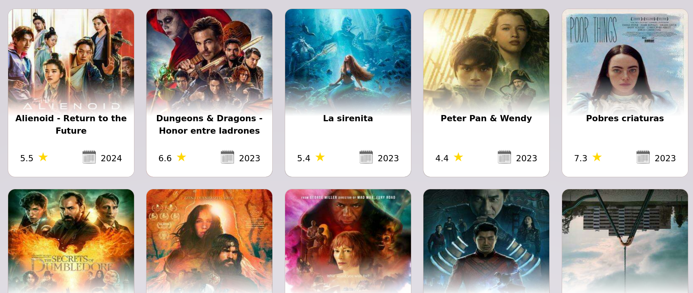
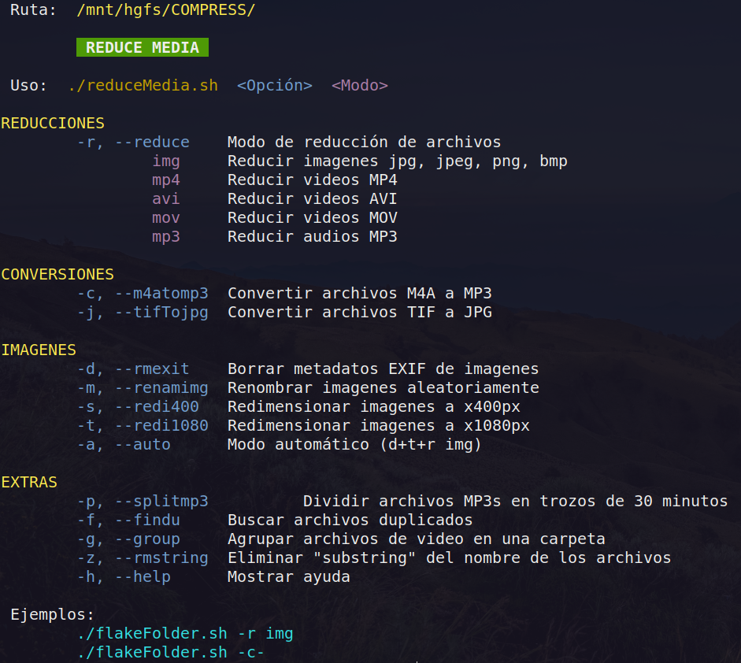
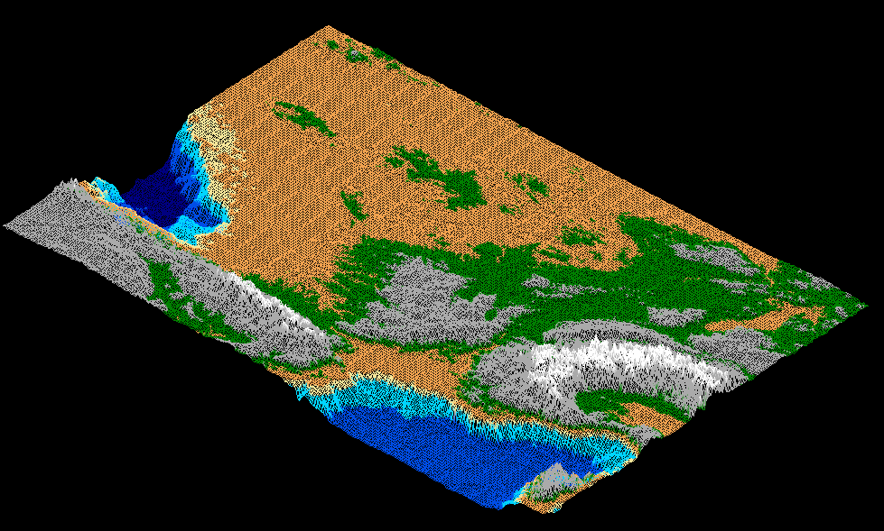

Aquí puedes ver algunos de los proyectos en los que he trabajado
-

Gestor de películas
Proyecto que gestiona de forma integral una colección de películas local.
Con obtención de metadatos mediante scraping.
Pyhton, Flask, HTML, CSS, JavaScript, SQL -

Colección Shell Script
Conjunto de script desarrollados en bash script para el desarrollo de distintas funciones.
Usadas para administrar librerías multimedia y sistemas entre otros.
Bash, ZSH, Scripting -

FDF Avanzado
Ampliación de un proyecto de representación de mapas isométricos añadiendo más funcionalidades.
Dadas las limitaciones del proyecto original decidí desarrollarlo.
C, Makefile, Bash -

Visión por computador
Colección de pequeños códigos como prueba de concepto para el uso de visión por computador.
Utilizado para detectar objetos, caras, etc.
Python, OpenCV -

Campus 42
Proyectos desarrollados en el campues 42 hasta el Rank 02.
A medida que vaya finalizando distintos anillos los iré liberando.
C, Bash, Makefile -
Módulos Python
Conjunto de módulos que facilizan la implementación de distintas funciones.
Desde el uso de Bases de Datos, Conexión Web, o manejo de configuraciones de aplicación.
Python -
Exam Study
Plataforma de ayuda al estudio de examenes 42.
Proximamente.
C, bash


Hola 👋, Soy Cristóbal J. Subires entusiasta de la tecnología, aprendiz constante de programación y muy interesado en la ciberseguridad e IT
Actualmente realizo diferentes tipos de proyectos en el campus de programación de 42, cuya metodología me hace crecer cada día más en soft skills y conocimientos.
No solo la programación ocupa mi interés, también me atrae la administración, análisis y auditoria de seguridad, el hardening de sistemas operativos, la investigación forense digital, la automatización mediante scripts, o el análisis de Malware.
Deseo es seguir avanzando y aumentando conocimientos en el sector de la ciberseguridad hasta poder dedicarme a ello, y en vista a la cantidad de ataques a instituciones y empresas que se dan hoy día, ser uno de los que contribuyen a mejorarlas en ese aspecto.
En mi tiempo libre también dedico tiempo a aumentar mi conocimientos en mécanica, electrónica, ciencia, y otos.